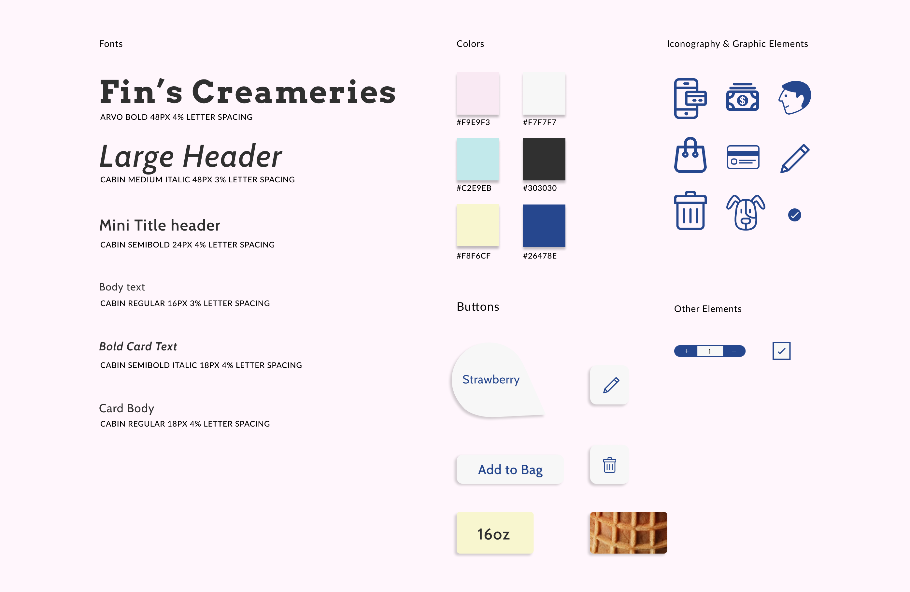

Designing an Ice Cream Vending Machine for Everyone; Including your Pets
An interactive vending machine that serves ice-cream for both themselves and their pet. They simply stop by, customize their cream, pay then wait for it. Now both of them can enjoy it together.
Client Group Project
Role UX / UI Designer
Duration 3-Weeks
Research
The Problem
Many restaurants, bars and vending machines still remain not pet-friendly for those who sought to and do walk with their companion(s). Despite there are a lot of valuable statistics available, but there are safety concerns pertaining to pets in the restaurants.
70% of American households owns a pet-- along with dogs being the most owned pet.
In American households, there are 84.6 million pets compared to 52.8 million children.
The American Pet Products Association surveyed 1,200 pet owners and 90% said “Pets are family.”
The Research Conclusion
Many restaurants, bars and vending machines still remain not pet-friendly for those who sought to and do walk with their companion(s). Despite there are a lot of valuable statistics available, but there are safety concerns pertaining to pets in the restaurants.
Groundwork
Our Solution
A soft serve ice cream vending machine that will dispense customizable creameries for everyone, including for their pets. We wants to allow these users to have a place where they could go support their love for their pets while they are on the go.
Project Goals
We focused mostly on the interactive process of how to use the vending machine, the steps taken to ordering an ice cream for themselves and their pet.
Visually Attractive
The design of the UI matches the integration of pets and people with ice cream. Its a cute idea and should be designed accordingly.
Easy-to-Follow
The users will be able to follow through and customize their ice cream while they are on the go!
Useful
The users will be able to follow through and customize their ice cream while they are on the go!
Inspiration Board
Our design approach was mostly inspired off these colors to make our designs look and seem cute. We wanted the product to seem fun and overall friendly to other people.

Style Guide
We believe this style guide captures the idea of making the design cute due to the light color, and typography and as well as the rounded interactive parts.
